Apache Airflow对接FusionInsight¶
适用场景¶
Apache Airflow 1.10.6 ↔ FusionInsight HD 6.5 (HDFS/Hive/HeTu)
Apache Airflow 1.10.6 ↔ FusionInsight HD 8.0 (HDFS/Hive)
说明：对接hive推荐是用jdbc连接方式
测试环境描述¶
Apache Airflow安装主机： 172.16.2.121 对接FI HD集群： 172.16.5.161-163
安装anaconda¶
参考jupyternotebook或者jupyterhub文档，完成anaconda环境的安装。这里选用的是Python2版本的安装。因为Python3版本在后续的安装airflow kerberos的时候会报错。
python3 安装问题单： https://issues.apache.org/jira/browse/AIRFLOW-5033
安装airflow¶
-
在安装好的anaconda的bin路径下
/opt/anaconda2/bin，输入如下命令pip install apache-airflow开始安装airflow -
使用如下命令安装相关的依赖
yum install gcc-c++ python-devel.x86_64 cyrus-sasl-devel.x86_64 yum install cyrus-sasl-devel cyrus-sasl-gssapi cyrus-sasl-md5 cyrus-sasl-plain - 安装完成后输入如下命令继续安装airflow对kerberos, hive，gcp的额外特性
pip install apache-airflow[kerberos,hive,gcp]
具体介绍请参见airflow文档：https://airflow.apache.org/docs/stable/installation.html
-
启动airflow:
-
使用如下命令初始化airflow关联的数据库
airflow initdb
-
使用如下命令启动airflow的网络服务
airflow webserver -p 8080
可以看到启动后airflow默认的home路径为/root/airflow
-
打开另外一个终端，
source ~/.bashrc.anaconda2初始完环境变量后，使用如下命令启动airflow的scheduler服务airflow scheduler
注意：遇到如图报错不影响使用
-
登陆airflow的webUI检查:
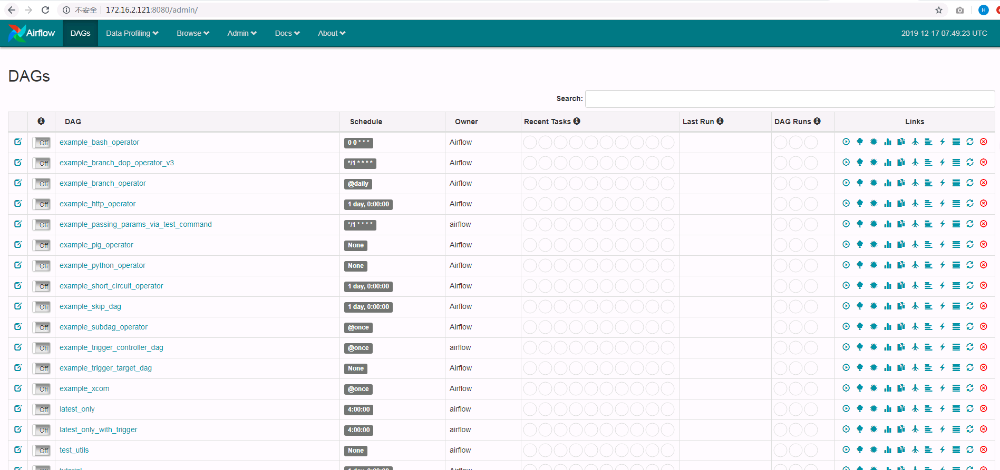
kerberos相关配置¶
-
停止已经启动的airflow
-
登陆对接集群FI HD manager创建测试用户airflow，并且下载对应的user.keytab文件以及krb5.conf文件。将user.keytab文件重命名为airflow.keytab文件

-
将上一步获得的airflow.ketab文件和krb5.conf文件拷贝到airflow主机的/opt路径
-
登陆路径/root/airflow修改配置文件airflow.cfg：
-
修改kerberos相关配置

[kerberos] ccache = /tmp/krb5cc_0 # gets augmented with fqdn principal = airflow reinit_frequency = 3600 kinit_path = /opt/165_651hdclient/hadoopclient/KrbClient/kerberos/bin/kinit keytab = /opt/airflow.keytab其中
/opt/165_651hdclient/hadoopclient/KrbClient/kerberos/bin/kinit为对接集群客户端对应的kinit文件 -
修改security相关你配置：

-
airflow的调度会使用dag文件，需要在
/root/airflow路径下创建一个新的dags文件夹：
airflow中hive相关connection配置¶
说明（重要）：本节测试3种可以和hive连接的方式，第1种和第2中需要更改airflow主机/etc/hosts文件，所以不能与其他的连接方式兼容（比如hdfs），在实际运用中推荐使用jdbc的连接方式来进行连接。
airflow中hive metastore connection配置¶
-
重启airflow
-
重新打开一个终端，初始化环境变量（source ~/.bashrc.anaconda2），输入以下命令增加一个hive metastore的connection：
airflow connections --add \
--conn_id metastore_cluster1 \
--conn_type 'hive_metastore' \
--conn_host '172.16.4.162' \
--conn_port 21088 \
--conn_extra '{"authMechanism":"GSSAPI", "kerberos_service_name":"hive"}'

注意：metastore_cluster1为airflow的conn_id，后续配置dag时需用到，不能与已有的conn_id重名
- 可登陆airflow的webUI检查增加的hive metastore connection配置：
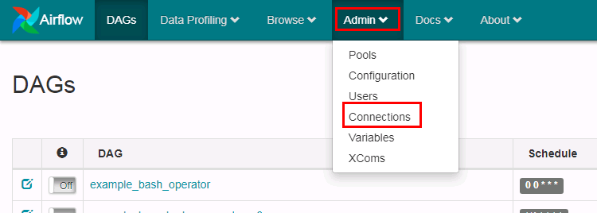
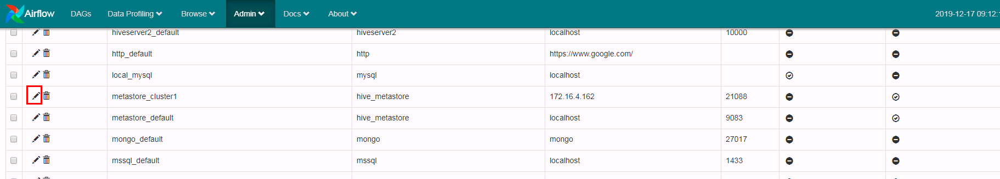

- 修改airflow主机的/etc/hosts文件:
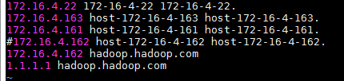
注意：需要将对应连接的主机名之前的注释掉，改成hadoop.hadoop.com
- 在终端输入
python进行验证

输入代码：
from airflow.hooks import hive_hooks
hm = hive_hooks.HiveMetastoreHook(metastore_conn_id='metastore_cluster1')
hm.get_databases()
t=hm.get_table(db='default', table_name='iris')
t.tableName
[col.name for col in t.sd.cols]

airflow中hiveserver2 connection配置¶
-
重启airflow
-
重新打开一个终端，初始化环境变量（source ~/.bashrc.anaconda2），输入以下命令增加一个hiveserver2的connection：
airflow connections --add \
--conn_id hiveserver2_test \
--conn_type 'hiveserver2' \
--conn_host '172.16.4.162' \
--conn_port 21066 \
--conn_extra '{"authMechanism":"KERBEROS", "kerberos_service_name":"hive"}'
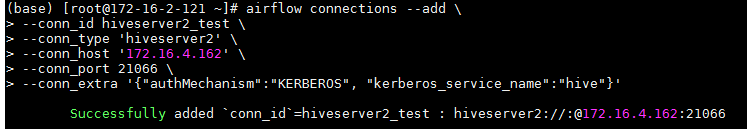
注意：hiveserver2_test为airflow的conn_id，后续配置dag时需用到，不能与已有的conn_id重名
- 登陆airflow的webUI检查增加的hiveserver2 connection配置：
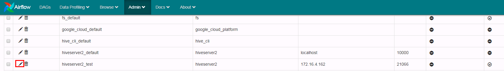
做如下增加修改并保存：

- 在终端输入
python进行验证
输入代码：
from airflow.hooks import hive_hooks
hh = hive_hooks.HiveServer2Hook(hiveserver2_conn_id='hiveserver2_test')
sql = "SELECT * FROM default.iris"
len(hh.get_records(sql))
hh.get_records(sql)

airflow中jdbc connection对接hive配置¶
-
执行如下命令
source /opt/165_651hdclient/hadoopclient/bigdata_env kinit airflow -
配置
/opt/jaas.conf文件
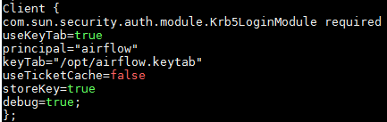
-
使用如下命令导入jvm参数：
export JAVA_TOOL_OPTIONS="-Djava.security.krb5.conf=/etc/krb5.conf -Djava.security.auth.login.config=/opt/jaas.conf -Dzookeeper.server.principal=zookeeper/hadoop.hadoop.com -Dzookeeper.request.timeout=120000" -
重启airflow
-
重新打开一个终端，初始化环境变量（source ~/.bashrc.anaconda2），输入以下命令增加一个jdbc的connection名字叫做hive_jdbc：
airflow connections --add \
--conn_id hive_jdbc \
--conn_type 'jdbc'
- 登陆airflow的webUI配置hive_jdbc，参考图配置好参数点save保存

1. hive_jdbc
2. Jdbc Connection
3. jdbc:hive2://172.16.4.161:24002,172.16.4.162:24002,172.16.4.163:24002/default;serviceDiscoveryMode=zooKeeper;principal=hive/hadoop.hadoop.com@HADOOP.COM;user.principal=airflow;user.keytab=/opt/airflow.keytab
4. /opt/165_651hdclient/hadoopclient/Hive/Beeline/lib/jdbc/hive-jdbc-3.1.0.jar,/opt/165_651hdclient/hadoopclient/Hive/Beeline/lib/jdbc/ant-1.10.3.jar,/opt/165_651hdclient/hadoopclient/Hive/Beeline/lib/jdbc/cglib-3.2.10.jar,/opt/165_651hdclient/hadoopclient/Hive/Beeline/lib/jdbc/common-0.0.1.jar,/opt/165_651hdclient/hadoopclient/Hive/Beeline/lib/jdbc/commons-collections-3.2.2.jar,/opt/165_651hdclient/hadoopclient/Hive/Beeline/lib/jdbc/commons-collections4-4.2.jar,/opt/165_651hdclient/hadoopclient/Hive/Beeline/lib/jdbc/commons-configuration-1.6.jar,/opt/165_651hdclient/hadoopclient/Hive/Beeline/lib/jdbc/commons-configuration2-2.1.1.jar,/opt/165_651hdclient/hadoopclient/Hive/Beeline/lib/jdbc/commons-io-2.4.jar,/opt/165_651hdclient/hadoopclient/Hive/Beeline/lib/jdbc/commons-lang-2.6.jar,/opt/165_651hdclient/hadoopclient/Hive/Beeline/lib/jdbc/commons-lang3-3.3.2.jar,/opt/165_651hdclient/hadoopclient/Hive/Beeline/lib/jdbc/commons-logging-1.1.3.jar,/opt/165_651hdclient/hadoopclient/Hive/Beeline/lib/jdbc/commons-net-3.6.jar,/opt/165_651hdclient/hadoopclient/Hive/Beeline/lib/jdbc/crypter-0.0.6.jar,/opt/165_651hdclient/hadoopclient/Hive/Beeline/lib/jdbc/curator-client-2.12.0.jar,/opt/165_651hdclient/hadoopclient/Hive/Beeline/lib/jdbc/curator-framework-2.12.0.jar,/opt/165_651hdclient/hadoopclient/Hive/Beeline/lib/jdbc/cxf-core-3.1.16.jar,/opt/165_651hdclient/hadoopclient/Hive/Beeline/lib/jdbc/cxf-rt-frontend-jaxrs-3.1.16.jar,/opt/165_651hdclient/hadoopclient/Hive/Beeline/lib/jdbc/cxf-rt-transports-http-3.1.16.jar,/opt/165_651hdclient/hadoopclient/Hive/Beeline/lib/jdbc/FMS-v1r2c60-20160429.jar,/opt/165_651hdclient/hadoopclient/Hive/Beeline/lib/jdbc/guava-19.0.jar,/opt/165_651hdclient/hadoopclient/Hive/Beeline/lib/jdbc/hadoop-auth-3.1.1.jar,/opt/165_651hdclient/hadoopclient/Hive/Beeline/lib/jdbc/hadoop-common-3.1.1.jar,/opt/165_651hdclient/hadoopclient/Hive/Beeline/lib/jdbc/hadoop-mapreduce-client-core-3.1.1.jar,/opt/165_651hdclient/hadoopclient/Hive/Beeline/lib/jdbc/HA-v1r2c60-20160429.jar,/opt/165_651hdclient/hadoopclient/Hive/Beeline/lib/jdbc/hive-common-3.1.0.jar,/opt/165_651hdclient/hadoopclient/Hive/Beeline/lib/jdbc/hive-metastore-3.1.0.jar,/opt/165_651hdclient/hadoopclient/Hive/Beeline/lib/jdbc/hive-serde-3.1.0.jar,/opt/165_651hdclient/hadoopclient/Hive/Beeline/lib/jdbc/hive-service-3.1.0.jar,/opt/165_651hdclient/hadoopclient/Hive/Beeline/lib/jdbc/hive-service-rpc-3.1.0.jar,/opt/165_651hdclient/hadoopclient/Hive/Beeline/lib/jdbc/hive-shims-0.23-3.1.0.jar,/opt/165_651hdclient/hadoopclient/Hive/Beeline/lib/jdbc/hive-shims-common-3.1.0.jar,/opt/165_651hdclient/hadoopclient/Hive/Beeline/lib/jdbc/hive-standalone-metastore-3.1.0.jar,/opt/165_651hdclient/hadoopclient/Hive/Beeline/lib/jdbc/httpclient-4.5.2.jar,/opt/165_651hdclient/hadoopclient/Hive/Beeline/lib/jdbc/httpcore-4.4.4.jar,/opt/165_651hdclient/hadoopclient/Hive/Beeline/lib/jdbc/jackson-annotations-2.9.8.jar,/opt/165_651hdclient/hadoopclient/Hive/Beeline/lib/jdbc/jackson-core-2.9.8.jar,/opt/165_651hdclient/hadoopclient/Hive/Beeline/lib/jdbc/jackson-core-asl-1.9.13.jar,/opt/165_651hdclient/hadoopclient/Hive/Beeline/lib/jdbc/jackson-databind-2.9.8.jar,/opt/165_651hdclient/hadoopclient/Hive/Beeline/lib/jdbc/jackson-jaxrs-1.9.13.jar,/opt/165_651hdclient/hadoopclient/Hive/Beeline/lib/jdbc/jackson-mapper-asl-1.9.13.jar,/opt/165_651hdclient/hadoopclient/Hive/Beeline/lib/jdbc/javax.annotation-api-1.2.jar,/opt/165_651hdclient/hadoopclient/Hive/Beeline/lib/jdbc/javax.ws.rs-api-2.0.1.jar,/opt/165_651hdclient/hadoopclient/Hive/Beeline/lib/jdbc/jdbc_pom.xml,/opt/165_651hdclient/hadoopclient/Hive/Beeline/lib/jdbc/jettison-1.1.jar,/opt/165_651hdclient/hadoopclient/Hive/Beeline/lib/jdbc/jsch-0.1.54.jar,/opt/165_651hdclient/hadoopclient/Hive/Beeline/lib/jdbc/libthrift-0.9.3.jar,/opt/165_651hdclient/hadoopclient/Hive/Beeline/lib/jdbc/log4j-1.2.17.jar,/opt/165_651hdclient/hadoopclient/Hive/Beeline/lib/jdbc/mockito-all-1.10.19.jar,/opt/165_651hdclient/hadoopclient/Hive/Beeline/lib/jdbc/netty-all-4.1.17.Final.jar,/opt/165_651hdclient/hadoopclient/Hive/Beeline/lib/jdbc/om-controller-api-0.0.1.jar,/opt/165_651hdclient/hadoopclient/Hive/Beeline/lib/jdbc/om-monitor-plugin-0.0.1.jar,/opt/165_651hdclient/hadoopclient/Hive/Beeline/lib/jdbc/pms-v1r2c60-20160429.jar,/opt/165_651hdclient/hadoopclient/Hive/Beeline/lib/jdbc/protobuf-java-2.5.0.jar,/opt/165_651hdclient/hadoopclient/Hive/Beeline/lib/jdbc/slf4j-api-1.7.10.jar,/opt/165_651hdclient/hadoopclient/Hive/Beeline/lib/jdbc/slf4j-log4j12-1.7.5.jar,/opt/165_651hdclient/hadoopclient/Hive/Beeline/lib/jdbc/spring-aop-4.3.20.RELEASE.jar,/opt/165_651hdclient/hadoopclient/Hive/Beeline/lib/jdbc/spring-beans-4.3.20.RELEASE.jar,/opt/165_651hdclient/hadoopclient/Hive/Beeline/lib/jdbc/spring-context-4.3.20.RELEASE.jar,/opt/165_651hdclient/hadoopclient/Hive/Beeline/lib/jdbc/spring-core-4.3.20.RELEASE.jar,/opt/165_651hdclient/hadoopclient/Hive/Beeline/lib/jdbc/spring-expression-4.3.20.RELEASE.jar,/opt/165_651hdclient/hadoopclient/Hive/Beeline/lib/jdbc/stax2-api-3.1.4.jar,/opt/165_651hdclient/hadoopclient/Hive/Beeline/lib/jdbc/stax-api-1.0-2.jar,/opt/165_651hdclient/hadoopclient/Hive/Beeline/lib/jdbc/woodstox-core-5.0.3.jar,/opt/165_651hdclient/hadoopclient/Hive/Beeline/lib/jdbc/woodstox-core-asl-4.4.1.jar,/opt/165_651hdclient/hadoopclient/Hive/Beeline/lib/jdbc/xercesImpl-2.9.1.jar,/opt/165_651hdclient/hadoopclient/Hive/Beeline/lib/jdbc/xmlpull-1.1.3.1.jar,/opt/165_651hdclient/hadoopclient/Hive/Beeline/lib/jdbc/xmlschema-core-2.2.3.jar,/opt/165_651hdclient/hadoopclient/Hive/Beeline/lib/jdbc/xpp3_min-1.1.4c.jar,/opt/165_651hdclient/hadoopclient/Hive/Beeline/lib/jdbc/xstream-1.4.10.jar,/opt/165_651hdclient/hadoopclient/Hive/Beeline/lib/jdbc/zookeeper-3.5.1.jar
5. org.apache.hive.jdbc.HiveDriver
- 在终端输入
python进行验证

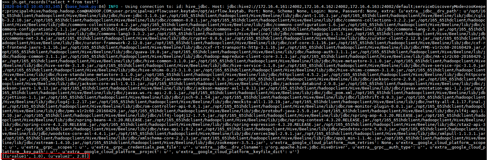
输入代码：
from airflow.hooks import jdbc_hook
jh = jdbc_hook.JdbcHook(jdbc_conn_id='hive_jdbc')
jh.get_conn()
jh.get_records("select * from test")
airflow中hetu相关connection配置¶
airflow中jdbc connection对接hetu配置¶
-
执行如下命令
source /opt/165_651hdclient/hadoopclient/bigdata_env kinit airflow -
配置
/opt/jaas.conf文件
-
使用如下命令导入jvm参数：
export JAVA_TOOL_OPTIONS="-Djava.security.krb5.conf=/etc/krb5.conf -Djava.security.auth.login.config=/opt/jaas.conf -Dzookeeper.server.principal=zookeeper/hadoop.hadoop.com -Dzookeeper.request.timeout=120000" -
重启airflow
-
重新打开一个终端，初始化环境变量（source ~/.bashrc.anaconda2），输入以下命令增加一个jdbc的connection名字叫做hetu：
airflow connections --add \
--conn_id hetu \
--conn_type 'jdbc'
- 登陆airflow的webUI配置hetu，参考图配置好参数点save保存

1. hetu
2. Jdbc Connection
3. jdbc:presto://172.16.4.161:24002,172.16.4.162:24002,172.16.4.163:24002/hive/default?serviceDiscoveryMode=zooKeeper&zooKeeperNamespace=hsbroker&deploymentMode=on_yarn&SSL=true&SSLTrustStorePath=/opt/hetuserver.jks&KerberosConfigPath=/opt/krb5.conf&KerberosPrincipal=airflow&KerberosKeytabPath=/opt/airflow.keytab&KerberosRemoteServiceName=HTTP&KerberosServicePrincipalPattern=%24%7BSERVICE%7D%40%24%7BHOST%7D
4. /opt/presto-jdbc-316.jar
5. io.prestosql.jdbc.PrestoDriver
- 在终端输入
python进行验证


输入代码：
from airflow.hooks import jdbc_hook
jh = jdbc_hook.JdbcHook(jdbc_conn_id='hetu')
jh.get_conn()
jh.get_records("select * from test")
airflow中hdfs相关connection配置¶
配置airflow中webhdfs connection配置¶
- 因为此次使用webhdfs的http连接方式对接集群，首先先检查集群配置项是否符合要求：
登录FusionInsight Manager页面，单击“集群 > 待操作集群的名称 > 服务 > HDFS > 配置 >全部配置”，在“搜索”框里搜索“dfs.http.policy”，然后勾选“HTTP_AND_HTTPS”，单击“保存”，单击“更多 > 重启”重启HDFS服务
如果已经配置略过此步骤
-
重启airflow
-
重新打开一个终端，初始化环境变量（source ~/.bashrc.anaconda2），输入以下命令增加一个hdfs的connection名字叫做webhdfs_fusioninsight1：
airflow connections --add \
--conn_id webhdfs_fusioninsight1 \
--conn_type 'hdfs'

输入代码：
from airflow.hooks import webhdfs_hook
whdfs = webhdfs_hook.WebHDFSHook(webhdfs_conn_id='webhdfs_fusioninsight1')
whdfs.get_conn()
- 登陆airflow的webUI配置webhdfs_fusioninsight1，参考图配置好参数点save保存
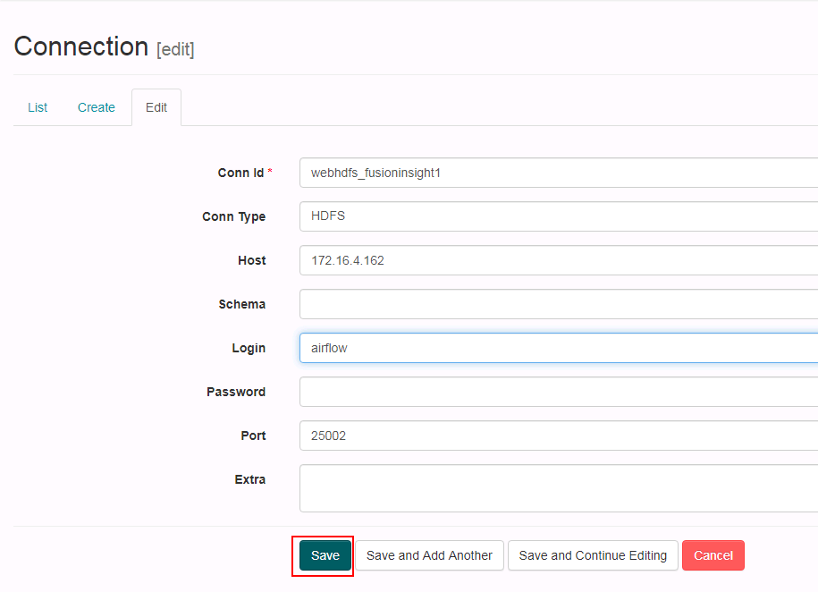
- 下面在airflow主机创建路径
/opt/loadfile,创建一个iris.txt文件内容：

1,5.1,3.5,1.4,0.2,setosa
2,4.9,3,1.4,0.2,setosa
3,4.7,3.2,1.3,0.2,setosa
4,4.6,3.1,1.5,0.2,setosa
5,5,3.6,1.4,0.2,setosa
6,5.4,3.9,1.7,0.4,setosa
7,4.6,3.4,1.4,0.3,setosa
8,5,3.4,1.5,0.2,setosa
9,4.4,2.9,1.4,0.2,setosa
10,4.9,3.1,1.5,0.1,setosa
- 在终端输入
python进行验证
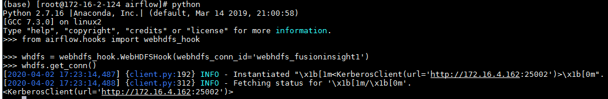
输入代码：
from airflow.hooks import webhdfs_hook
whdfs = webhdfs_hook.WebHDFSHook(webhdfs_conn_id='webhdfs_fusioninsight1')
whdfs.get_conn()
下面测试一下数据导入的样例，接着上面的命令继续输入
whdfs.load_file('/opt/loadfile/','/tmp/')
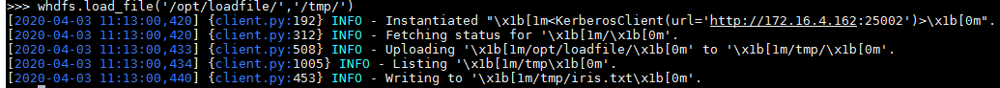
登陆集群hdfs的/tmp路径检查：
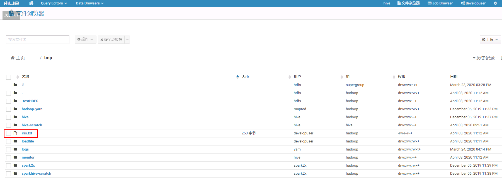
配置airflow中的DAG¶
说明：airflow使用dag来控制调度，实际上是一个.py文件，使用时需要编写任务流的py文件后再执行
- 登陆airflow主机
/opt/airflow/dags路径，新建一个hivetest.py文件，内容如下：
#!/usr/bin/env python
# -*- coding: utf-8 -*-
from datetime import datetime, timedelta
from airflow.operators.python_operator import PythonOperator, BranchPythonOperator
from airflow import DAG
from airflow.operators.bash_operator import BashOperator
from airflow.operators.hive_operator import HiveOperator
from airflow.hooks import hive_hooks
def test_select_conn():
from airflow.hooks.hive_hooks import HiveServer2Hook
hook = hive_hooks.HiveServer2Hook(hiveserver2_conn_id='hiveserver2_test')
sql = """SELECT * FROM iris"""
records = hook.get_records(sql)
return records
default_args = {
'owner': 'airflow',
'start_date': datetime(2019, 1, 21),
}
dag = DAG(
'hive_server_run_test', default_args=default_args,
schedule_interval='@once')
t1 = BashOperator(
task_id='print_date',
bash_command='date',
dag=dag)
t2 = BranchPythonOperator(
task_id='hive_server_run',
python_callable=test_select_conn,
dag=dag)
t2.set_upstream(t1)
注意:该任务流有两个动作，第一个是t1，在命令行中输入data命令打印出当前时间，第二个动作是t2，打印出select * from iris查询语句，两个动作有对应的task_id
- 参考airflow官方文档：https://airflow.apache.org/docs/stable/tutorial.html
使用命令airflow test hive_server_run_test hive_server_run 2019-12-17检查hive连接:

其中hive_server_run_test是dag id, hive_server_run是 task id
- 上述test步骤测试成功之后，使用命令
airflow backfill hive_server_run_test -s 2019-12-17 -e 2019-12-17提交任务：
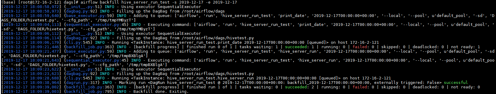
去webUI检查：


点击print_data以及hive_server_run日志查看结果：
print_data:
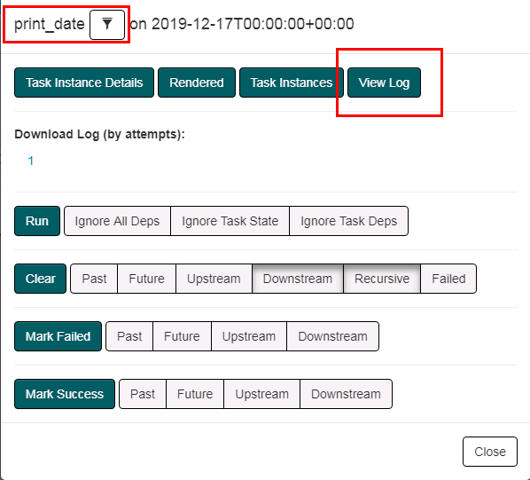
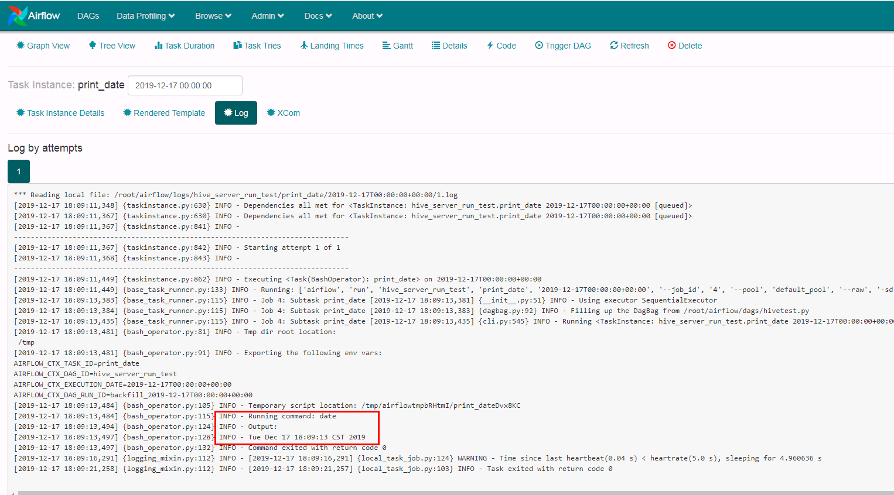
hive_server_run:
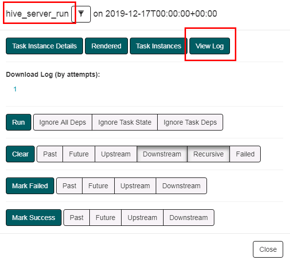

FAQ¶
- 在《安装airflow》的时候输入
pip install apache-airflow会遇到错误：
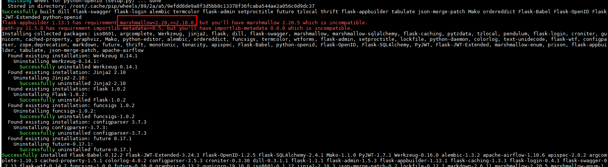
需要把marshmallow重新装成2.18.0的版本，使用命令./pip install marshmallow==2.18.0 --force-reinstall 在anaconda2的bin目录下重新安装正确版本问题解决
- 在《安装airflow》的时候输入
pip install apache-airflow[kerberos,hive,gcp]会遇到错误：
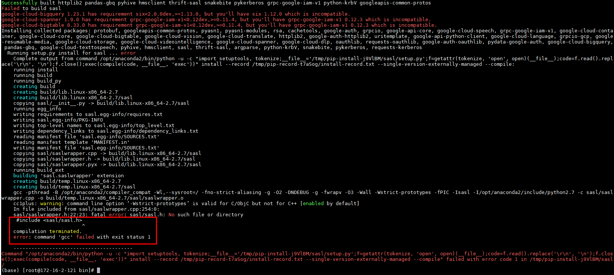
问题在于 "#include yum install gcc-c++ python-devel.x86_64 cyrus-sasl-devel.x86_64先安装yum依赖，完了之后再重新执行pip install apache-airflow[kerberos,hive,gcp]问题解决
- 在《airflow中hive相关connection配置》中调试的时候，输入
hm.get_databases()遇到报错：

thrift.transport.TTransport.TTransportException: Could not start SASL: Error in sasl_client_start (-4) SASL(-4): no mechanism available: No worthy mechs found
这个问题是python依赖的问题，参考：https://stackoverflow.com/questions/30705576/python-cannot-connect-hiveserver2/30707252
安装命令：sudo yum install cyrus-sasl-devel cyrus-sasl-gssapi cyrus-sasl-md5 cyrus-sasl-plain 安装外依赖后问题解决
- 在做webhdfs的时候使用python命令在后台调测遇到问题：

ImportError: No module named hdfs
解决办法:
去/opt/anaconda2/bin下面使用命令pip install hdfs后重新执行程序问题解决
- 在验证jdbc链接的时候遇到报错：

找不到jdbc驱动主类，并且在配置上已经制定了正确的jar包路径
解决办法：
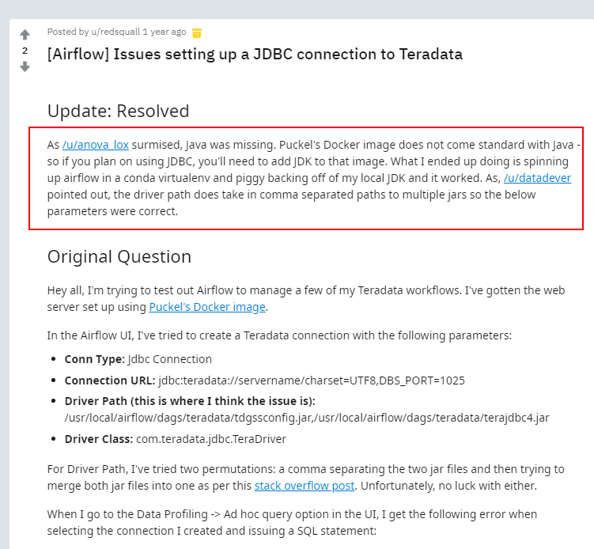
在使用python命令后台测试前 kinit /opt/hadoopclient/bigdata_env 再测试问题解决